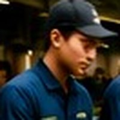

RECRUITER
採用担当者のご紹介
※写真とメッセージはサンプルです。実際の担当者写真・メッセージに差し替えます
採用担当 新井 雄太
「応募していいのかな？」と迷っている段階のご相談も大歓迎です。仕事内容の質問だけでも構いませんので、お電話またはフォームから気軽にご連絡ください。あなたにお会いできるのを楽しみにしています。
RECRUIT｜株式会社新井商店
成田・富里の青果を全国の食卓へ届けて47年。選果場から事務所まで、地域の「美味しい」を支える仲間を募集しています。未経験からのスタートを、先輩がしっかり支えます。
入社時に経験や資格は問いません（現場職は普通免許のみ必須）。選果機の操作から野菜の見分け方まで、ベテランの先輩が実際の作業の中で丁寧に教えます。
賞与は年2回・計3ヶ月分（前年度実績）、昇給制度あり。週休二日制で年間休日105日、社会保険完備。マイカー通勤OK・駐車場完備で通いやすい職場です。
市場・スーパー・外食産業へ青果物を納入し、自社農場での栽培も手がけています。自分の仕事が地元の農業と全国の食卓につながる、やりがいのある毎日です。
その日の入荷量と出荷先を全員で確認してスタート。
選果ラインで野菜を選別し、パック・箱詰めを行います。
こまめに休憩をはさみながら作業します。
休憩スペースでゆっくりお昼。休憩は1日計90分です。
季節に応じて圃場の管理や、社用車での外出業務も。
翌日の出荷分の準備を進めます。
残業は月平均5時間ほど。オンオフの切り替えもしっかり。

S・Kさん
選果場スタッフ／入社3年目
前職は飲食店。野菜の知識ゼロでしたが、先輩がマンツーマンで教えてくれたので安心でした。今は後輩に教える立場です。
M・Tさん
一般事務／入社5年目
子育てと両立しながら働いています。日曜休みでシフトの相談もしやすく、長く続けられる職場だと思います。
Y・Aさん
農場スタッフ／入社2年目
体を動かす仕事が好きで転職しました。自分が関わった野菜がスーパーに並んでいるのを見ると嬉しくなります。
H・Nさん
選果場スタッフ／入社8年目
アットホームで風通しのいい会社です。分からないことは何でも聞ける雰囲気なので、未経験でも大丈夫ですよ。
「応募していいのかな？」と迷っている段階のご相談も大歓迎です。仕事内容の質問だけでも構いませんので、お電話またはフォームから気軽にご連絡ください。あなたにお会いできるのを楽しみにしています。
| 職種 | 選別・パック詰め作業・野菜の栽培・管理 |
|---|---|
| 雇用形態 | 正社員（随時募集・増員のため複数名採用） |
| 仕事内容 | 市場・スーパー・外食産業へ納入する青果物の選別、パック・箱詰め等。自社農場での野菜の生産・圃場管理、社用車での外出業務もあります。 |
| 給与 | 月給 230,000円〜300,000円 昇給あり（前年度実績 月10,000〜20,000円）／賞与 年2回・計3ヶ月分（前年度実績） |
| 勤務時間 | 8:00〜17:30（シフト制／休憩90分） 時間外は月平均5時間程度 |
| 休日 | 日曜・その他（週休二日制／年間休日105日） 年末年始・夏期休暇あり |
| 応募資格 | 経験不問・高校卒業以上・44歳以下（長期勤続によるキャリア形成のため） 要普通自動車運転免許（AT限定可） |
| 待遇・福利厚生 | 社会保険完備、通勤手当実費支給（上限あり）、マイカー通勤可（駐車場あり）、退職金制度あり（勤続10年以上）、試用期間1〜3ヶ月（時給1,300円） |
| 勤務地 | 千葉県富里市十倉535（本社／転勤なし・JR八街駅より車13分） |
| 選考 | 面接1回（書類選考なし）／結果は面接後7日以内に連絡 |
| 職種 | 営業事務急募・1名 |
|---|---|
| 雇用形態 | 正社員 |
| 仕事内容 | 伝票の作成、請求書・荷物の送り状の作成、電話・来客対応などの一般事務。 |
| 給与 | 月給 230,000円〜350,000円 |
| 勤務時間 | 8:00〜17:30（シフト制） |
| 休日 | 日曜・祝日・その他（週休二日制／年間休日105日） |
| 応募資格 | 経験不問 |
| 待遇・福利厚生 | 社会保険完備、通勤手当あり、マイカー通勤可、転勤なし |
| 勤務地 | 千葉県富里市十倉535（本社） |
| 職種 | 一般事務急募・1名 |
|---|---|
| 雇用形態 | パート |
| 仕事内容 | 伝票の作成、請求書・荷物の送り状の作成、電話対応などの一般事務。 |
| 給与 | 時給 1,150円〜1,300円 |
| 勤務時間 | 8:00〜17:00の間でシフト制（時間外労働なし） ※勤務時間はご相談ください |
| 休日 | 日曜・祝日・その他（週休二日制） |
| 応募資格 | 経験不問 |
| 待遇・福利厚生 | 通勤手当あり、マイカー通勤可、書類選考なし |
| 勤務地 | 千葉県富里市十倉535（本社） |
「話を聞いてみたい」だけでも大歓迎。新しい一歩を、私たちと一緒に。
0476-94-0010お電話でのご応募・お問い合わせ（受付時間 8:00〜17:00／採用担当まで）